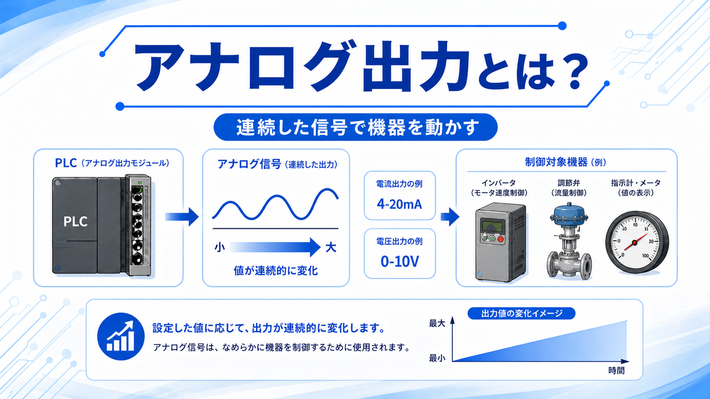
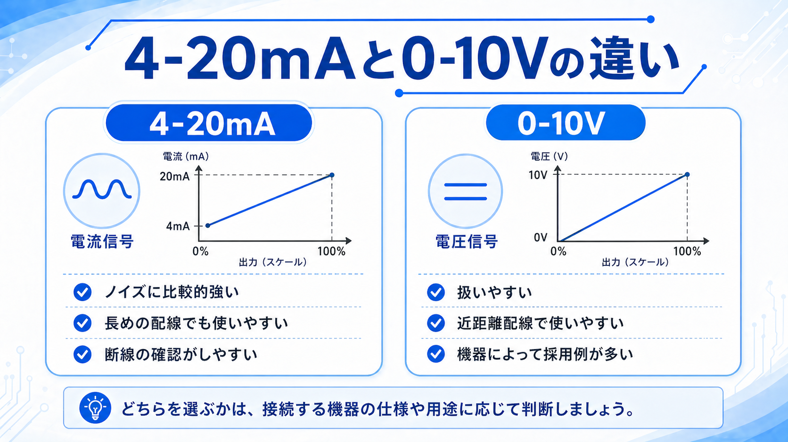
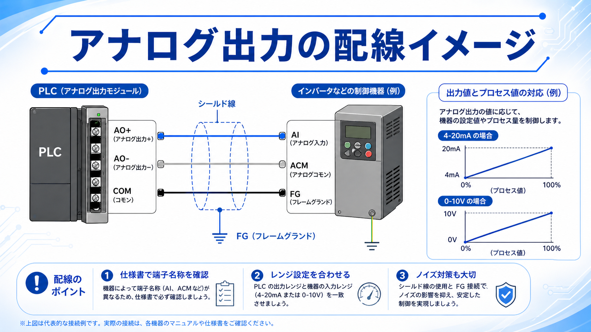
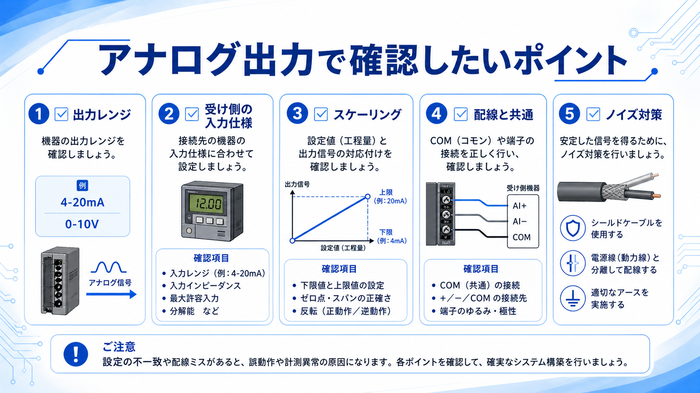

向いている人
- アナログ出力の役割を初めて学ぶ人
- 4-20mAと0-10Vの違いを整理したい人
- PLCからインバータや調節弁を動かす流れを知りたい人
アナログ出力とは、PLCなどの制御機器から、4-20mAや0-10Vのような連続した信号を出す出力です。
ランプをON/OFFするようなデジタル出力とは違い、アナログ出力では出力値の大きさに応じて、機器の動きや設定値をなめらかに変えることができます。


先輩アナログ出力は「ONかOFFか」ではなく、「どのくらい出すか」を相手の機器に伝える信号だよ。

後輩インバータの周波数指令や、調節弁の開度指令みたいに、量を変えたい時に使うんですね。
アナログ入力が「現場の値をPLCに読む」ものなら、アナログ出力は「PLCから現場機器へ値を出す」ものです。
アナログ出力でよく使われる信号には、4-20mAの電流信号と、0-10Vの電圧信号があります。どちらも出力値を連続的に変えるための信号ですが、特徴が少し違います。

| 信号 | 特徴 | 現場での見方 |
|---|---|---|
| 4-20mA | 電流信号。長めの配線やノイズ環境でも使われやすい。 | 4mAが下限、20mAが上限として扱われることが多いです。 |
| 0-10V | 電圧信号。比較的扱いやすく、近距離配線で使われることが多い。 | 0Vが下限、10Vが上限として扱われることが多いです。 |
| 共通点 | どちらも出力値に応じて制御量を変える。 | 接続先の入力レンジと、PLC側の出力レンジを必ず合わせます。 |
PLC側が4-20mAで出していても、接続先が0-10V入力の設定になっていると正しく動きません。出す側と受ける側のレンジをセットで確認します。
アナログ入力は、圧力センサーや温度変換器などから出てくる信号をPLCが読むためのものです。一方、アナログ出力はPLCから信号を出して、相手の機器を動かすためのものです。
つまり、アナログ入力は「読む側」、アナログ出力は「出す側」と考えると分かりやすいです。
センサーや変換器からの4-20mA・0-10VをPLCへ取り込み、圧力・温度・流量などの値として扱います。
PLCから4-20mA・0-10Vを出して、インバータ、調節弁、指示計などの設定値や動作量を変えます。
AIはアナログ入力、AOはアナログ出力です。図面やユニット名を見る時は、どちら向きの信号なのかを先に確認すると迷いにくくなります。
アナログ出力では、PLCのAO端子から接続先機器のAI端子へ信号を渡します。代表的には、AO+、AO-、COM、シールド線、FGなどを確認します。
機器によって端子名は異なるため、配線図だけで判断せず、必ずPLC側と接続先機器側の仕様書を確認します。

アナログ信号は小さな信号なので、COMの取り方や極性を間違えると、値が反転したり、動作が不安定になったりします。
先輩アナログ出力はノイズの影響も受けやすいから、動力線と離す、シールドを使う、FGを確認する。このあたりはかなり大事だよ。
後輩配線がつながっているだけじゃなくて、値が正しく伝わっているかまで見る必要があるんですね。
アナログ出力を使う時は、出力レンジ、接続先の入力仕様、スケーリング、配線、ノイズ対策を順番に確認します。

PLC側が4-20mAで出すのか、0-10Vで出すのかを確認します。接続先の入力レンジと合わせることが大切です。
PLC内の数値と、実際の出力値がどう対応するかを確認します。0〜100%や0〜4000など、扱う範囲を整理します。
AO+、AO-、COM、AI+、AI-などの端子名を確認します。機器ごとに呼び方が異なる場合があります。
シールドケーブル、FG、動力線との分離を確認します。値がふらつく時は配線経路も確認します。
例えば50%出力した時に、インバータの周波数や調節弁の開度が想定通りか確認します。数値だけでなく、相手の機器側の表示や動作も見ます。
アナログ出力は、PLCから4-20mAや0-10Vの信号を出して、インバータ、調節弁、指示計などを動かすための出力です。
アナログ入力が「現場の値を読む」ものなら、アナログ出力は「現場機器へ値を出す」ものです。出力レンジ、接続先の入力仕様、COM、スケーリング、ノイズ対策を確認しながら使いましょう。
アナログ出力は、ON/OFFではなく連続した値を出す出力です。4-20mA・0-10Vの違いと、PLC側・接続先機器側のレンジ合わせを押さえると、制御盤の信号の流れが追いやすくなります。